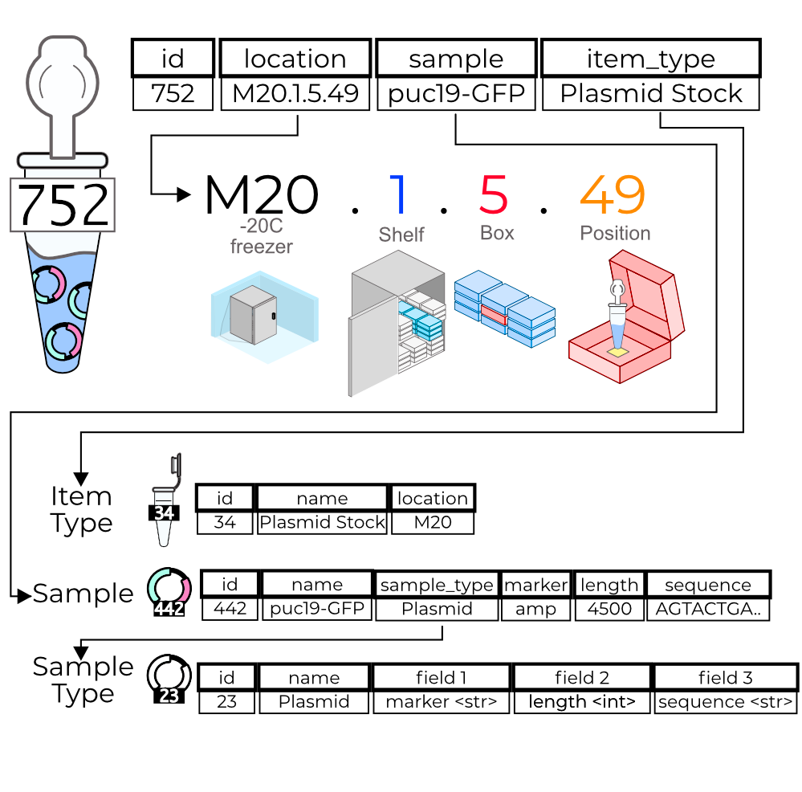
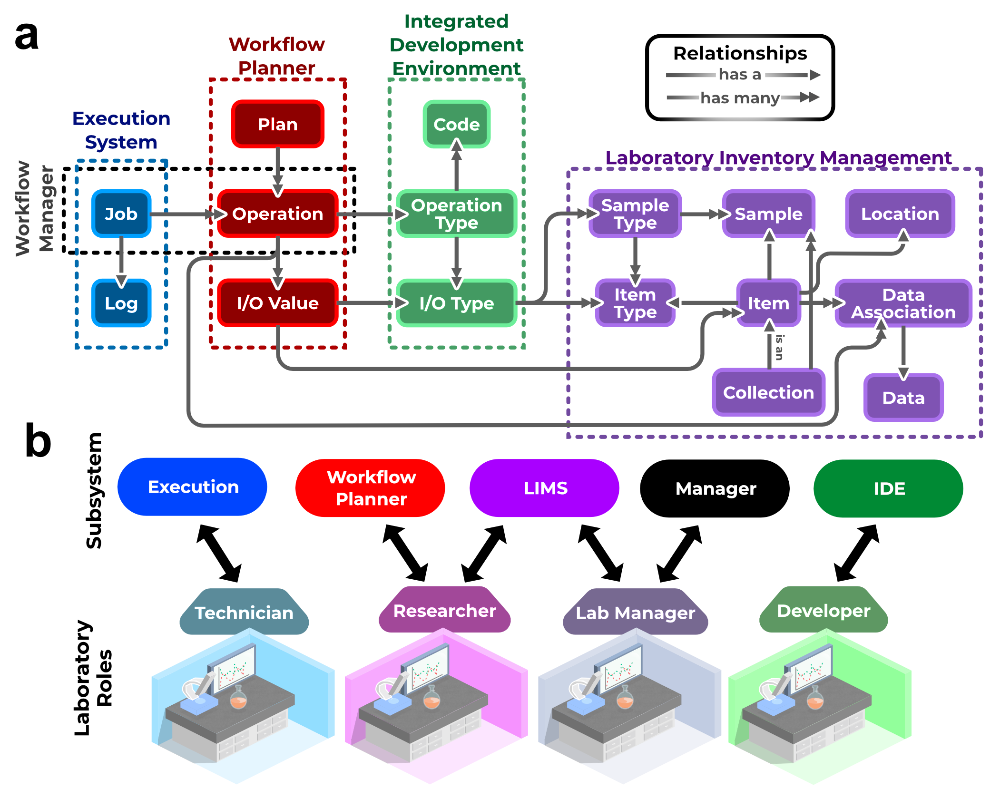

Getting Started¶
Trident (also known as pydent) is the Python API to Aquarium, aa open-source human-in-the-loop laboratory automation system that enables rapid, flexible, and reproducible workflow development and execution. Unlike most other automation systems, Aquarium embraces the practicality of humans in the laboratory, using codified human-readable instructions to automate lab operations. You can learn more about it here: https://www.aquarium.bio/
Trident provide algorithmic access to a scientific laboratory running Aquarium. It provides an interface for algorithms and computerized-agents to interact the scientific laboratory, enticing the possibility engineering systems that can not only learn from experimental data, but can actually schedule and run its own experiments with little human intervention.
To install, checkout the installation guide: Installing Trident
Logging into a session¶
Session instances provide the main interface between your Python script and various requests made to an Aquarium server.
To use trident, you’ll need an Aquarium login, password, and url
from pydent import AqSession
session = AqSession("user", "password", "http://you.aquarium.url")
If we want to take a look at exactly what the session is doing, we can set verbose mode on:
session.set_verbose(True)
This produces many log files, so lets leave it off initially.
Models¶
In Trident, scientific models are treated as first class objects. These objects represent various aspects of most laboratories. These models include laboratory inventory such as
Samples – laboratory entities (such as a Plasmid or *E. coli) that have chemical or biological properties
Items – physical instantiations of a Sample, such as a specific tube of Plasmid or a particular glycerol stock of an E. coli strain.
Collections – multi-compartment items that can contain many samples (e.g a 96-well Plate)
ObjectType – The type of container a collection/item possess (e.g. a small tube vs a large tube)
Samples, Items, and Collections comprise the inventory system of Trident/Aquarium. Items have a unique id and a physical local associated with the lab. The biological/chemical properties are detailed by its Sample. Further, Samples have specific types called SampleTypes which further constrain the types of Samples there can be. For example, a yeast strain is one SampleType while a bacterial strain is another SampleType. There may be many types of yeast strains in the inventory, each with their own specific properties (e.g. genome sequence, antibiotic resistance). Each of these samples may have a myriad of different Items in the lab of different ObjectTypes. The inventory relationships are depicted here:
In addition to the inventory models, Trident/Aquarium has a protocol execution model as well:
Operation – a scientific protocol that takes in some specified number inventory or parameters and produces some other inventory
Job – model representing actions taken during the execution of an Operation (dates, steps, etc.)
Plans – a set of Operations connected in a graph that roughly represents a scientific experiment
DataAssociation – a key/value pair associated with inventory, plans, or operations
etc.

To view all of the models available through Trident, run
from pydent.models import __all__
print(__all__)
['Account', 'AllowableFieldType', 'Budget', 'Code', 'Collection', 'DataAssociation', 'FieldType', 'FieldValue', 'Group', 'Invoice', 'Item', 'Job', 'JobAssociation', 'Library', 'Membership', 'ObjectType', 'Operation', 'OperationType', 'PartAssociation', 'Plan', 'PlanAssociation', 'Sample', 'SampleType', 'Upload', 'User', 'UserBudgetAssociation', 'Wire']
For more information about these models, visit the API Reference
Models contain specific relationships to each other roughly outlined here:
Making queries¶
Model queries can be made directly from the session. For example, like grab one Sample from the Aquarium server:
mysample = session.Sample.one()
print(mysample)
Once loaded, model attributes can be accessed directly as class attributes:
print("We just grabbed sample {} with name {}".format(mysample.id, mysample.name)
We can also grab many samples at the same time:
last50 = session.Sample.last(50) # the last 50 samples created in the database
first25 = session.Sample.first(25) # the first 25 samples created
mysample2 = session.Sample.find_by_name("GFP") # sample with name == 'GFP'
samples = session.Sample.where({'sample_type_id
You can use where with more specific conditions
mysampletypes = session.OperationType.where({"name": "Assemble Plasmid", "deployed": True})
print(mysampletypes[0].name)
Assemble Plasmid
You can use where with SQL-like queries as well
mysample = session.Sample.where("id>10 AND sample_type_id<10")[0]
print(mysample.name)
Sample
We can also query models by querying their creation (created_at) or update (updated_at) times:
import udatetime
from datetime import timedelta
last24 = udatetime.to_string(udatetime.utcnow() - timedelta(hours=24))
jobs = session.Job.where("created_at > '{}'".format(last24))
print("jobs found")
jobs found
Relationship Queries¶
Trident automatically makes requests as needed for certain attributes are access from models. For example, we know from above that Samples have many Items associated with it and, conversely, an Item has a single Sample. Trident allows us to access these requests on demand. For example, the following code automatically makes a new request for an Item’s Sample using its .sample_id attribute.
item = session.Item.one()
# new request equivalent to session.Sample.where({"id": item.sample_id})[0] is made here
sample = item.sample
On the other side, we can collect all of the Items associated with a particular sample using:
sample.items
Once these queries are made, the data is cached into the model instance. Running sample.items again will not result in a new query, but will return the previously cached results. If you want to refresh the query, you can set the attribute to None, which will re-initiate the appropriate query once accessed:
sample.items # no query here
sample.items = None
sample.items # new query here
An important thing to note is that, while this make querying very convenient on the Python side of things, it is very easy to make many unncessary requets. For information on making efficient queries and generally how querying works, visit Making Queries.
Creating inventory¶
The syntax for creating new Samples, Items, etc. is:
mysession.Sample.new(**kwargs).save()
mysession.Item.new(**kwargs).save()
mysession.Plan.new(**kwargs).save()
# and so on
The session.Sample.new() syntax will instantiate the model and connect the model to the session.